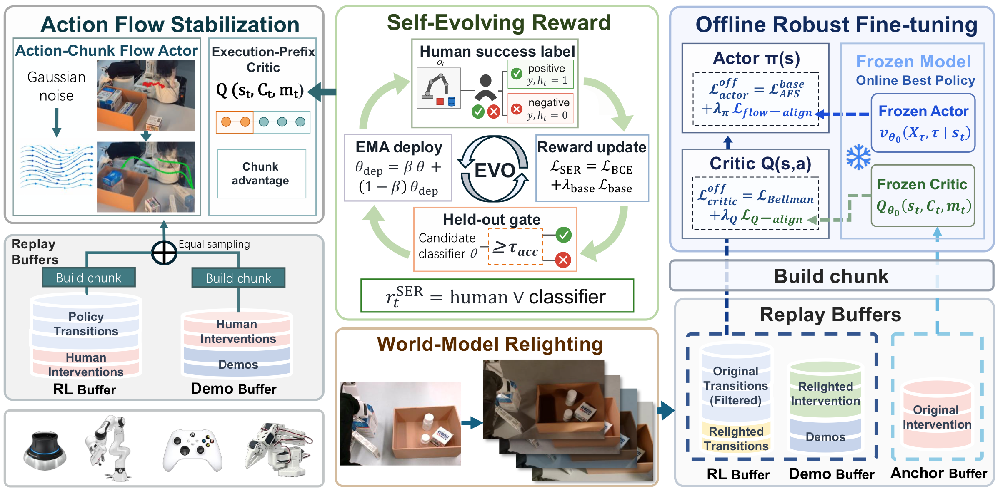
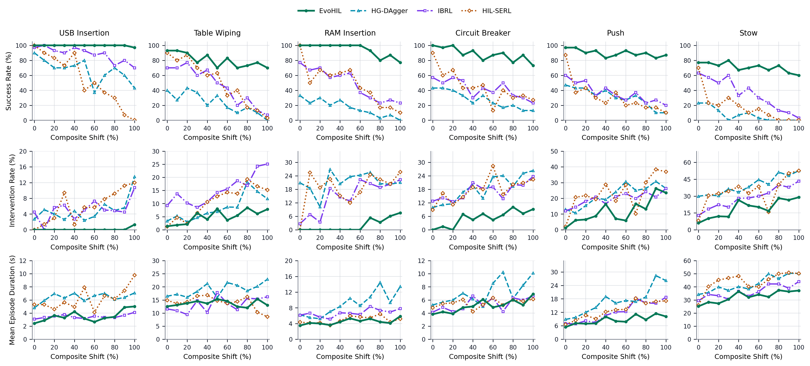
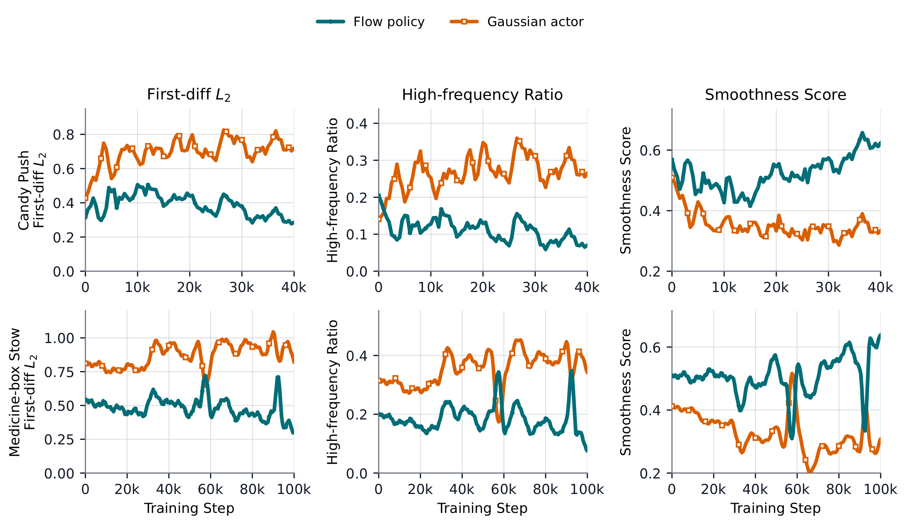

Self-Evolving Reward
Human-confirmed positives and conservative weak negatives update the deployed success classifier with label-source isolation and gated EMA deployment.
Adapting reward, action, and visual interfaces for robust real-robot manipulation under scene changes.
Anonymous Project Page
EvoHIL produces smooth, coherent behavior across both short-horizon pushing and long-horizon stowing. The paired rollouts below are displayed concurrently at 3× speed.
Human feedback drives a self-evolving learning loop: the reward classifier adapts as the scene changes, the flow-matching policy generates coherent action chunks, and retention-aware fine-tuning improves visual robustness without additional robot interaction.
Human-in-the-loop reinforcement learning is effective for contact-rich manipulation, but three interfaces commonly remain fixed after deployment: the visual reward model, the step-wise action generator, and the policy's visual training domain. A change in lighting can corrupt success labels, destabilize control, and sharply reduce task success.

Human-confirmed positives and conservative weak negatives update the deployed success classifier with label-source isolation and gated EMA deployment.
A flow-matching actor generates short, coherent action chunks. An execution-prefix critic evaluates only the portion that reaches the robot.
Relit replay expands visual coverage, while frozen actor and critic references preserve previously mastered behavior.
We evaluate precision insertion, surface manipulation, contact operation, pushing, and long-horizon stowing on a Franka FR3 and a low-cost SO-101 arm.

Ten ordered conditions vary brightness, color temperature, shadow, and reflection. At the primary 60% composite shift, EvoHIL improves the six-task mean success rate from 29% to 89%: an absolute gain of 60 percentage points and approximately 3.1× the HIL-SERL success rate.

Success rate (%)
| Task | Robot | HIL-SERL | EvoHIL | Gain |
|---|---|---|---|---|
| USB insertion | FR3 | 50% | 100% | +50 pp |
| RAM insertion | FR3 | 43% | 100% | +57 pp |
| Table wiping | FR3 | 33% | 87% | +54 pp |
| Circuit breaker | FR3 | 13% | 83% | +70 pp |
| Candy push | SO-101 | 20% | 93% | +73 pp |
| Medicine-box stow | SO-101 | 15% | 73% | +58 pp |
| Mean | — | 29% | 89% | +60 pp |
Evaluation protocol. For a fair comparison, every method–task entry in Table IV is averaged over 60 evaluation trials. The gain column reports the absolute difference in percentage points (pp).
HIL-SERL samples commands independently, producing frequent corrections. EvoHIL integrates a learned velocity field into temporally coherent action chunks. All videos are shown at 3× speed.

Overlaid end-effector trajectories show the baseline's irregular corrections and EvoHIL's shorter, more coherent path.
The same improvement persists in a longer-horizon task that requires coordinated arm and gripper control.
Each experiment pairs a characteristic failure after an illumination change with repeated EvoHIL successes in the corresponding scene. All videos are shown at 3× speed.
Precision insertion under visual shift.
Contact-rich alignment and insertion.
Discrete contact operation.
Long surface-contact manipulation.
Planar object transport.
Long-horizon pick and place.
The experiments support targeted adaptation to a predefined family of illumination changes. Each illumination-sweep curve point summarizes 30 rollouts of one selected policy, while every method–task entry in Table IV is averaged over 60 evaluation trials for a matched comparison. The page does not claim unrestricted zero-shot visual generalization or physical jerk guarantees.